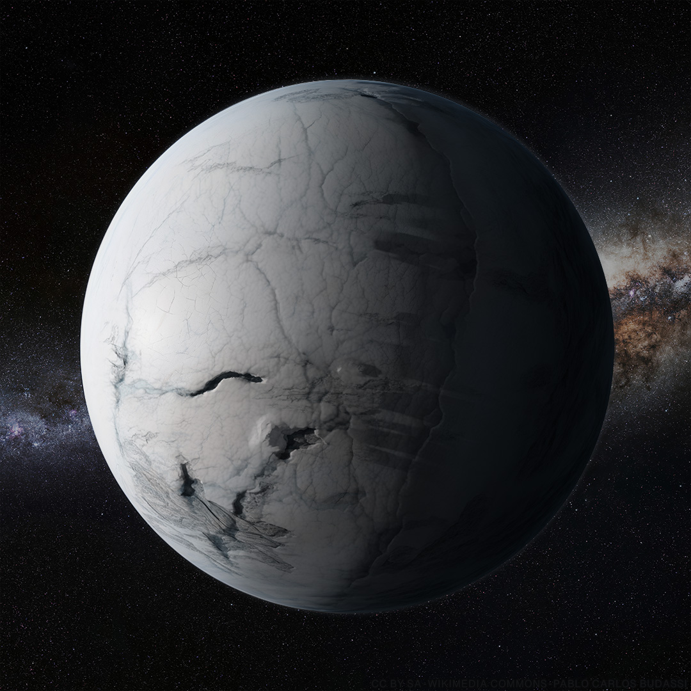

第 8 章
深海氧气红线
复杂多细胞生命的出现，并不要求氧气达到现代水平。它只要求跨过一条最低红线——一条可以让氧气从环境扩散到组织内部，维持细胞基本代谢的门槛。这个判断与大多数人的直觉相悖。我们习惯性地认

为，大型复杂生命需要富氧环境，需要接近现代水平的氧气浓度。但埃迪卡拉纪的化石记录讲述了一个完全不同的故事：生命在氧气浓度可能仅为现代水平百分之十到百分之四十的海洋里，第一次长到了一米以上。
这个故事的起点，在澳大利亚南部的埃迪卡拉山。那里出露的砂岩层面上，保存着地球上最古老的大型复杂多细胞生物化石。狄更逊水母的印痕可以长达一米四，宽度超过三十厘米，但厚度只有几毫米。
它呈椭圆形，中间一道纵向脊线，两侧分出对称的肋条，每条肋条又分出更细的次级纹路。这种分形结构让它的表面积极大，而内部组织与海水之间的距离始终不超过一两毫米。它没有口，没有肛门，没有肢体，没有可辨认的内部器官。它平铺在海底，像一片等待腐烂的落叶。但它不是落叶。
它活着的时候，体内有数万个细胞，每个细胞都需要氧气来产生ATP，维持最基本的代谢活动。这个矛盾——巨大的体形与极薄的剖面并存——指向一个物理约束。在埃迪卡拉纪的低氧海水中，氧气扩散的速率决定了生物可以长到多厚。菲克定律规定了扩散通量等于扩散系数乘以浓度梯度。
在生物组织中，氧气的扩散系数大约是在纯水中的四分之一到三分之一。如果环境海水溶解氧浓度是每升五毫升——大约相当于现代水平的百分之三十五——那么在一个厚度为两毫米的扁平生物中心层，氧浓度可能已经降到每升一毫升以下。这个数值，刚好接近真核细胞维持有氧呼吸的最低阈值。如果环境氧浓度更低，或者生物体更厚，中心细胞就会被迫转向无氧代谢，产生乳酸，最终酸中毒死亡。
狄更逊水母的几毫米厚度，不是演化“选择”的结果，而是物理规律筛选的结果。任何偶然突变出更厚躯体的个体，内部细胞会因缺氧而坏死，这种突变不会被保留。任何偶然突变出更复杂分枝结构的个体，表面积增加，氧气获取改善，这种突变可能被保留。
经过数千万年的筛选，留存下来的形态就是那些满足扩散约束的方案。化石记录证实了这一点：同一物种的不同个体，大小可以相差数倍，从几厘米到一米多长都有，但所有标本的厚度都稳定在几毫米。体长可以随生长条件变化——更多的营养、更长的生长期——但厚度被氧气扩散约束锁死了。
这个约束不仅体现在狄更逊水母身上。查尼虫形似一片巨大的蕨叶，长可达一米，同样极薄。斯普里格蠕虫体长数厘米，身体分节，但每一节都扁平如带。三分盘虫呈现三辐射对称的圆盘状，中央微微隆起，但整体厚度仍然远小于直径。雷尼虫采用分形分枝模式，每一级分枝都是上一级的缩小版，在有限体积内极大扩展了与海水接触的面积。这些形态的共同特征很明显：表面积最大化，体积最小化，内部组织与外部环境之间的距离被压缩到扩散可以胜任的尺度。
这不是一个偶然的形态特征集合。它是物理规律在生命体形上留下的直接签名。而这个签名的清晰程度，可以在现代海洋中找到对应。今天的海洋缺氧区边缘，低氧环境同样塑造着生物的体形。
在秘鲁和智利外海的缺氧区，底栖多毛类环节动物往往体形更小、更扁平，或者演化出高度分枝的鳃来增加氧气获取效率。在阿拉伯海和孟加拉湾的缺氧区，小型双壳类动物的壳体变薄，因为钙化过程本身就需要氧气和能量。在加利福尼亚湾的缺氧盆地底部，线虫成为优势类群，它们的体形细长如线，直径通常不超过几十微米，完全依赖扩散进行气体交换。
这些现代类比告诉我们，低氧环境并不阻止生命的演化，而是严格约束了生命可以采取的体形方案。你可以变大，但你必须变扁。你可以复杂化，但你必须分枝。你可以占据新的生态位，但你不能建造厚重的组织、不能演化出高代谢率的器官、不能主动运动。
这个约束解释了埃迪卡拉生物群的另一个显著特征：它们几乎没有发达的运动器官和捕食结构。在埃迪卡拉纪的化石记录中，几乎找不到任何可以确认的捕食痕迹——没有咬痕，没有钻孔，没有断裂的骨骼。这不是因为化石保存不完整。埃迪卡拉化石的精细程度可以保留毫米级的细节，如果存在捕食痕迹，它们应该被保存下来。
真正的原因是，那个世界确实没有捕食者。原因同样与氧气有关。主动捕食需要一系列高能耗的行为：运动、感知、追击、制服猎物、消化。所有这些行为都需要大量ATP，而ATP的产生依赖于充足的氧气供应。在埃迪卡拉纪的低氧环境中，一个生物仅仅维持基础代谢就已经耗尽了扩散进来的氧气配额。主动运动会导致代谢率急剧上升，氧气需求随之飙升，但扩散速率无法同步提升——这会立刻造成内部缺氧。
因此，埃迪卡拉生物群呈现出一个奇异的生态图景：一个没有追逐、没有撕咬、几乎没有主动运动的海底花园。占据舞台的是形态怪诞的庞然大物，它们静静地躺在海底，依靠水流带来的养分和氧气维持生命。有些可能通过体表的纤毛缓慢移动，有些可能固定在沉积物中，有些可能随波漂移。但没有一种生物演化出了真正的游泳能力、挖掘能力或捕食器官。
这不是因为它们没有时间演化。埃迪卡拉纪持续了大约四千万年，这个时间跨度足够现代哺乳动物从原始灵长类演化到智人。
它们没有演化出这些特征，是因为在当时的氧气约束下，这些特征在物理上不可行。
这里需要做一个重要的区分。氧阈值假说解释的是埃迪卡拉生物群的形态边界——为什么它们普遍扁平、为什么缺乏运动器官、为什么没有捕食结构。但它并不解释这些生物的具体形态——为什么狄更逊水母呈蕨叶状、查尼虫呈叶片状、三分盘虫呈三辐射对称。这些具体形态可能受到其他因素影响：发育生物学上的约束、生态功能的适应、遗传漂变，或者我们尚未理解的演化机制。
氧阈值假说与其他竞争假说可以共存。有学者提出，埃迪卡拉生物群的形态特征可以用生态空缺来解释：雪球地球之后，海洋生态系统几乎从零开始重建，大量生态位空置，生命可以进行各种形态实验而不面临竞争压力。也有学者强调营养盐的作用：冰川风化带来的磷和氮刺激了初级生产力的爆发，为大型生物提供了充足的食物基础。还有学者认为，埃迪卡拉纪缺乏捕食者，使得生物不需要演化出防御结构，因此可以采取大表面积、薄体壁的“脆弱”形态。这些解释并不互相排斥。
它们描述的是同一枚硬币的不同面。营养盐的涌入提供了物质基础，生态空缺提供了演化机会，缺乏捕食压力降低了防御成本，而氧气浓度划出了体形方案的硬边界。你可以在这个边界之内进行各种实验——叶状、盘状、分形状——但不能越过它。你不能在百分之十的现代氧浓度下演化出一只螃蟹，正如你不能在月球引力下建造一座不设地基的高楼。
要理解这个硬边界的物理基础，需要回到雪球地球结束后的海洋化学重置。成冰纪持续近一亿年的全球冰封，对海洋化学进行了一次深度格式化。当冰川最终消退，一系列连锁反应被触发。冰盖融化释放出被困在冰层中的过氧化氢，这些物质溶解于水后产生额外的氧气。更重要的是，冰川的研磨作用极大地增强了大陆的风化速率。厚达数千米的冰盖像锉刀一样刮过裸露的岩石，将大量此前被封存的矿物质，尤其是磷，碾碎并冲刷进海洋。
磷是关键。它是所有生命进行光合作用的必需营养元素。在雪球地球之前，磷的供应一直受制于缓慢的化学风化速率。
冰川解冻后，富含磷的融水涌入海洋，刺激了表层浮游光合生物的爆发性增长。蓝藻和藻类在阳光充足的表层水域迅速繁殖，释放出大量氧气。
但这只是故事的一半。表层产生的氧气能否进入深海，取决于海洋环流是否恢复。雪球地球期间，全球海洋被冰盖覆盖，环流几乎停滞。解冻后，温暖的表层海水向极地流动、冷却下沉，将表层富含氧气的海水带入深海——全球热盐环流重启了。这是一个缓慢但持续的过程。模型估算表明，埃迪卡拉纪海洋的溶解氧浓度，可能达到了现代海洋水平的百分之十到百分之四十。这个区间本身揭示了关键信息：它不是一个稳定的高氧环境，而是一个刚刚脱离全球性缺氧、氧含量波动且空间分布不均的世界。深海许多区域可能仍处于缺氧或低氧的边缘。
在靠近大陆架的浅海，氧气相对充足；但在更深的水域，氧气浓度急剧下降，形成一条陡峭的梯度。正是在这条梯度上，生命第一次获得了“变大”的许可。但许可的范围极其有限。
一些基于扩散-反应方程的计算表明，要支持一个厚度为五毫米、体长为一米的扁平生物，环境溶解氧浓度至少需要达到现代水平的百分之八到百分之十。如果这个生物内部有某种原始的液体循环——哪怕只是体腔液的缓慢流动——这个阈值可以降到百分之五左右。埃迪卡拉纪海洋的表层和浅海区域，模型估算的氧浓度大约在百分之十到百分之四十之间。这意味着，在大部分浅海区域，氧气浓度已经跨过了支持大型扁平生物的门槛，但还远不足以支持更复杂的体形方案。
深海的情况可能更为苛刻。热盐环流虽然将表层含氧水带入深海，但这个过程的效率取决于温度梯度、盐度分布和洋流路径。埃迪卡拉纪的海洋环流模式与今天不同。当时的超大陆罗迪尼亚正在裂解，海岸线重新配置，洋盆形态改变，这些都会影响深海氧气的补给速率。在某些深海盆地，氧气浓度可能长期徘徊在阈值的边缘，时而勉强够用，时而跌入缺氧。这种波动本身可能就是一种选择压力——只有那些能够耐受短期缺氧的形态才能存活。
这或许可以解释为什么埃迪卡拉生物群在深海沉积物中相对罕见，而在浅海沉积物中更为丰富。埃迪卡拉化石的主要产地——澳大利亚的埃迪卡拉山、纽芬兰的米斯特肯角、俄罗斯的白海地区、纳米比亚的纳马群——都代表当时的浅海环境，水深可能不超过几十米，在风暴浪基面之上或附近。这些地方是氧气最充足的区域，也是生命形态实验最活跃的舞台。
但即使在浅海，氧气也不是均匀分布的。沉积物中的有机质分解会消耗氧气，在沉积物-水界面以下几毫米处形成缺氧微环境。埃迪卡拉生物大多生活在沉积物表面之上，有些可能通过细小的固着器固定在沉积物中，但它们的躯体主体暴露在水流中。这种生活位置的选择，本身就是对沉积物缺氧的规避。狄更逊水母的化石通常保存在砂岩层面上，躯体印痕清晰，有时周围还有微弱的波纹痕迹。这表明它活着时是平铺在沉积物表面的，可能通过腹面的纤毛缓慢移动，或者被动地随水流漂移。
它的躯体如此之薄，以至于腹面紧贴沉积物的细胞可能已经处于缺氧边缘，而背面的细胞还沐浴在含氧水流中。几毫米的厚度差，就决定了生死。这是一个走钢丝的生存策略。它成功了大约四千万年。
然后，埃迪卡拉生物群从化石记录中消失了。在寒武纪的岩层中，我们看到了完全不同的生物群：三叶虫有坚硬的甲壳和复杂的附肢，奇虾有巨大的复眼和捕食前肢，腕足动物有铰合的贝壳，各种蠕虫在沉积物中挖掘复杂的洞穴。这些生物不仅体形更复杂，而且演化出了主动运动、捕食、防御和矿化骨骼的能力。从埃迪卡拉到寒武纪的转变，传统上被视为一次突然的、爆炸式的动物门类辐射。
但氧阈值假说提供了一个不同的视角。寒武纪大爆发不是一个孤立的事件，而是一个连续过程的后半段。埃迪卡拉纪跨过了“生存”的氧红线——氧气足够让大型多细胞生物存活和生长。寒武纪跨过了“竞赛”的氧红线——氧气足够支持高能耗的运动、捕食和防御行为。这两条红线之间的差距，可能只有几个百分点的氧浓度。
在今天的海洋缺氧区，研究人员找到了与埃迪卡拉生物群惊人相似的形态学回声。秘鲁—智利海沟上方的缺氧区边缘，水深约两百米处，溶解氧浓度降至每升零点五毫升以下——大约相当于现代表层水的百分之十。这里的底栖多毛类环节动物往往演化出极度扁平的体形，体宽可达体厚的二十倍以上，鳃部高度分枝，形成羽毛状结构，以最大化与周围水体的接触面积。在阿拉伯海北部的缺氧区，一种小型双壳类软体动物的壳体厚度仅为正常同类的三分之一，其外套膜边缘向外扩展，形成了额外的表面积，直接参与气体交换。
这些特征不是偶然的趋同，而是菲克定律在现代海洋中留下的活体签名。扩散方程不变，物理约束不变，因此解决方案也相似。将埃迪卡拉化石与这些现代缺氧区边缘的物种并列观察，可以清晰看到一条跨越五亿六千万年的连线：当氧气稀少时，生命必须变扁、变薄、分枝，或者放弃大型体形。狄更逊水母的几毫米厚度，与秘鲁外海那条多毛类环节动物的扁平躯体，遵循的是同一组偏微分方程。
这个约束的核心，在于扩散本身的物理极限。氧气分子在水中的扩散系数，在零摄氏度时约为每秒一点八乘以十的负九次方平方米，在二十摄氏度时上升到约二点三乘以十的负九次方平方米。在生物组织内部，由于细胞膜、细胞质和细胞外基质的阻碍，有效扩散系数进一步降低，通常仅为纯水中的四分之一到三分之一。这意味着，即使环境海水中的氧浓度达到现代水平的百分之四十，一个厚度超过五毫米的完全依赖扩散的扁平生物，其中心层的氧浓度也可能降到接近零的水平。
这个计算假设生物体内部没有主动输送机制——没有循环液体的流动，没有呼吸色素协助氧的运输。埃迪卡拉生物群恰恰缺乏这些结构。它们没有心脏，没有血管，没有鳃裂，甚至没有可以确认的体腔。
它们唯一能依靠的，是分子热运动推动氧分子在水中随机游走，从高浓度区向低浓度区缓慢迁移。每一次游走都是随机的，每一步的方向与上一步无关。
在三维空间中，一个氧分子要从环境水体到达扁平生物中心层的某个细胞，需要经历数百万次随机碰撞，实际路径长度可能是直线距离的数百倍。这就是为什么扩散只在极短距离内有效，也是为什么埃迪卡拉生物必须将厚度控制在几毫米之内。
这个物理学解释，与生态空缺假说和捕食压力缺失假说并不矛盾，而是为它们提供了边界条件。生态空缺意味着生命有机会尝试各种形态方案，但物理约束决定了哪些方案可行。捕食压力缺失意味着生命不需要建造厚重的防御结构，但物理约束决定了即使没有捕食者，体形也不能任意增厚。营养盐的涌入意味着生命有充足的物质基础来生长，但物理约束决定了长得再大也只能是扁平的。
但在这几个百分点之间，演化动态彻底改变了。在埃迪卡拉纪，生物之间的互动主要是竞争空间和资源——谁占据了更好的位置获取水流中的养分。
在寒武纪，互动变成了捕食与反捕食——谁吃掉谁，谁不被吃掉。这种转变一旦启动，就形成了一个自我强化的正反馈循环。捕食者演化出更好的感知和运动能力，猎物演化出更好的防御——硬壳、毒素、穴居。捕食者再演化出更强大的捕食器官来突破防御。军备竞赛开始了。
而这场军备竞赛的燃料，是氧气。每一轮竞赛升级，都要求更高的代谢率、更大的能量投入、更复杂的组织结构。氧气不再是限制体形的紧箍咒，而是驱动创新的引擎。
但这一切的前提，是那条最低红线首先被跨过。没有埃迪卡拉纪的扁平生物证明“变大”是可能的，就不会有寒武纪的复杂动物探索“变大”之后可以做什么。没有狄更逊水母用几毫米的厚度走钢丝，就不会有三叶虫用钙质甲壳武装自己。
回到澳大利亚埃迪卡拉山的那块砂岩板。狄更逊水母的印痕静静地躺在那里，一米四长，几毫米厚。
它不再只是一个奇怪的古代生物。它是氧气作为“体形设计师”留下的第一个清晰签名——一个被物理规律压扁的签名。扩散定律用数学语言写下了允许的范围：表面积必须足够大，厚度必须足够小，内部细胞与外部海水之间的距离不能超过扩散可以覆盖的尺度。
生命在这个范围内尝试了所有可能的形状——叶状、盘状、分形状、蕨叶状——然后等待。等待氧气浓度再上升一点点。等待那条更高的红线被跨过。等待一个可以负担运动、捕食和骨骼的时代。
那个时代尚未到来。但在它到来之前，埃迪卡拉的海底花园已经证明了一件事：在氧气革命的历史上，复杂生命的登场不需要富氧的天堂，只需要一个刚刚脱离地狱边缘的世界。那个世界里的每一片扁平的躯体，都是一张写给未来的通行证。